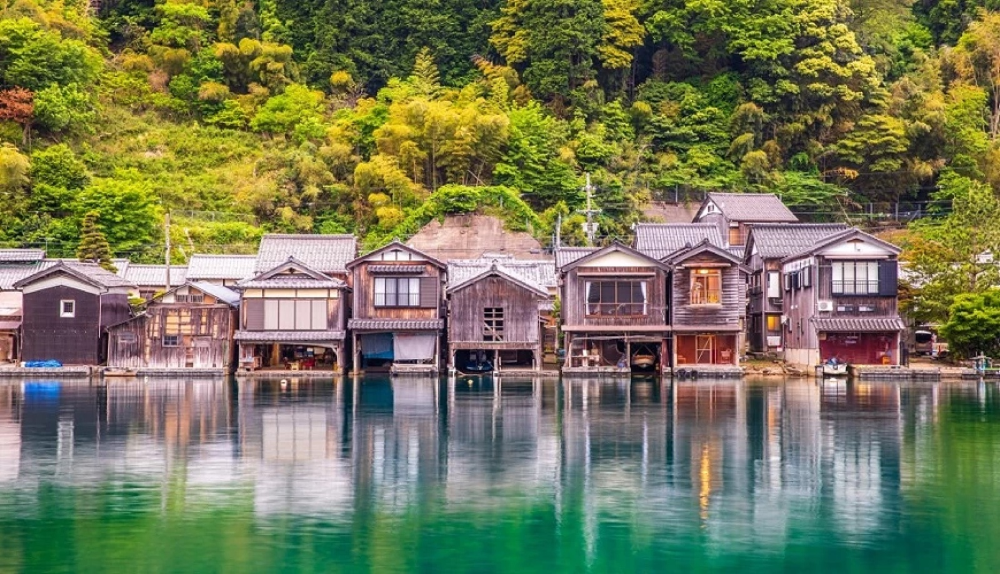

關西 10 天行程
家庭討論版 · 京都・海之京都・滋賀湖畔 · 10 天 9 夜
第一階段：京都經典與現代藝術 不租車，計程車／地鐵移動
住宿：京都市區飯店 ×3 晚
Day 1 抵達關西 → 古都安頓
Haruka 直達京都 → 飯店 check-in
Day 2 清水寺
清水寺建議早上 07:30 到，人少好走


Day 3 京都市京瓷美術館
青木淳改建的現代建築；戶外岡崎公園有大草地可放電

第二階段：海之京都 京都市區取車，開始自駕
住宿：天橋立／宮津溫泉 ×2 晚
Day 4 美山町茅葺之里 → 天橋立／宮津入住
車程：京都→美山 1h20 → 天橋立 1h10

Day 5 伊根舟屋（觀光船）→ 天橋立
天橋立可搭纜車、走松林沙洲

第三階段：滋賀湖畔與大師建築 隨意排，排不進去的收在備案
住宿：琵琶湖畔／雄琴溫泉 ×4 晚
Day 6 大原三千院 → 進駐琵琶湖
車程：天橋立→大原 2h → 琵琶湖 40m
Day 7 MIHO MUSEUM 美秀美術館（核心亮點，全天）

Day 8 佐川美術館 → La Collina 近江八幡

Day 9 高島水杉並木大道 → 白鬚神社

備案（有空再去，或替換上面任一天）
- 嵐山竹林・天龍寺 → 福田美術館（渡月橋畔，景觀咖啡廳）
- 大津湖岸渚公園（湖畔野餐、咖啡、放空）
- 近江八幡水鄉 或 飯店放鬆
返程
Day 10 滋賀 → 關西機場還車 → 返台
車程約 1.5–2h